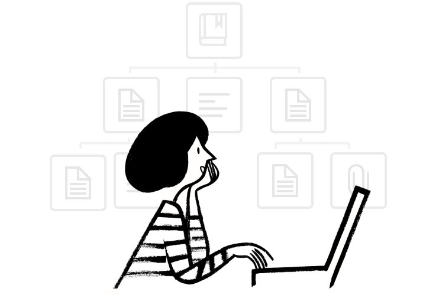
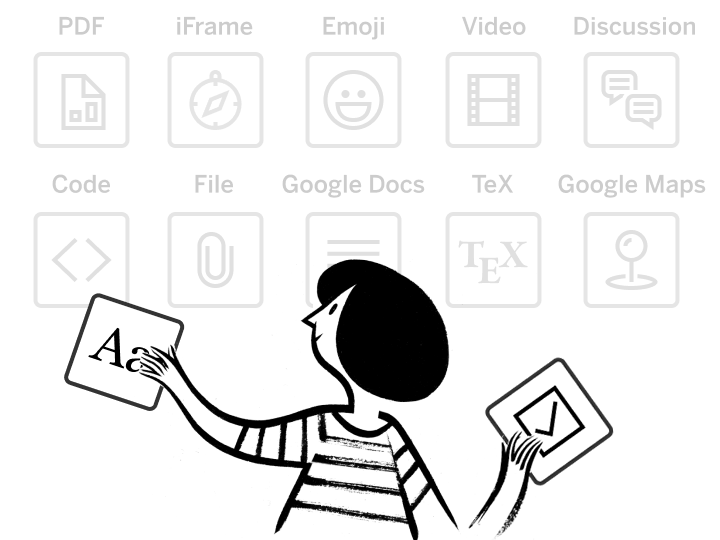

Step_1
Инициализация работы над проектом
Создание базы для создания манипулятора и продуктового развития проекта. Возможны недочеты и будущие правки. Этап должен запустить для нас входной канал для будущей модификации продукта.

Step_2
Сборка материального продукта
В данном этапе выполняются тесты комплектующих и материалов манипулятора в номинальном режиме работы. Нам нужно собрать и протестировать всю механику манипулятора. Здесь возможны риски, связанные с низким качеством материалов или двигателей робота. Также нужно собрать данные с энцефалографа и начать работу с камерой для манипулятора. Этап должен обеспечить нас мнением инвесторов и обывателей о продукте. Формируются входные данные для следующего этапа.

Step_3
Внедрение системы человеко-машинного взаимодействия
Для полноценной работы манипулятор должен надежно функционировать. Данный этап реализует основные функции и инновации, которые мы готовы заложить в робота. Современные метод управления должны обеспечить коллаборативные свойства при работе манипулятора при взаимодействии с человеком. На данном этапе мы показываем инвестору возможности нашей системы вживую.
Step_4
Разработка документации и финализация MVP
Данный этап является активной фазой проекта по работе с инвестором. В прошлых этапах это фоновая работа 1 - 2 людей. Важно обеспечить все потребности потребителей и инвесторов.